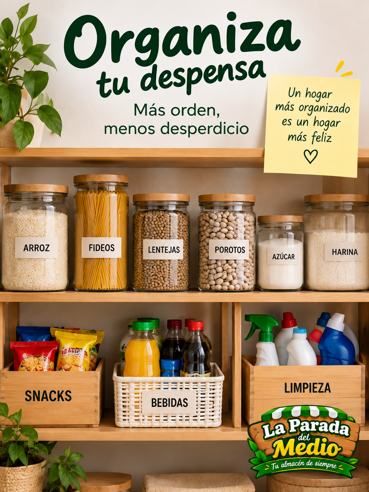

Cómo ahorrar en tus compras del mes
Algunos pequeños cambios al momento de comprar
pueden ayudarte a organizar mejor tu presupuesto.
Leer más

Consejos para organizar tu despensa
Mantener los productos ordenados permite aprovechar
mejor el espacio y evitar desperdicios.
Leer más